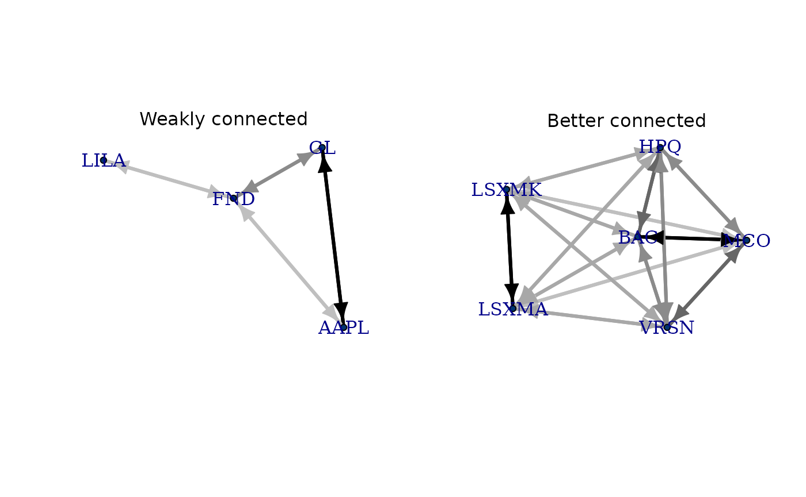

Example analyses
Use of the
fiedler, network.efficiency, and
cfa functions
Source:
vignettes/analysis_examples.Rmd
analysis_examples.RmdIntroduction
This vignette illustrates how to:
- Compute the algebraic connectivity of a Firm-Firm network;
- Determine how efficiently information and/or money capital flow through a network;
- Perform cascade failure analysis.
The experiments use these two datasets:
# Create a list of the desired firms
data('firms_BKB')
# Check a weakly connected subset of the network
FF_uncnnctd <- FF(firms_BKB[20:23], who = 'own', ties = 'naive', Matrix = TRUE)
g_uncnnctd <- FF.graph(FF_uncnnctd, 'simple')
# Check a strongly connected subset of the network
FF_cnnctd <- FF(firms_BKB[5:10], who = 'own', ties = 'naive', Matrix = TRUE)
g_cnnctd <- FF.graph(FF_cnnctd, 'simple')
# Plot to compare
layout(matrix(1:2, nrow = 1));{
plot_igraph(g_uncnnctd, asp = .75)
text(0, 1.3, 'Weakly connected')
plot_igraph(g_cnnctd, asp = .75)
text(0, 1.3, 'Better connected')
}
1. Algebraic connectivity
The algebraic connectivity can be computed to determine the
connectivity and robustness of a network. The fiedler()
takes as inputs either a object produced by or, if the relevant package
is installed, a / (respectively /) object.
As expected, the better-connected network has higher Fiedler value ($\(25.47) than the other one (\)$5.27).
2. Efficiency analysis
Network efficiency quantifies how efficiently information and/or money capital flow through a network. It is essential in systemic-risk identification, resilience assessment, and crisis-propagation analysis.
As expected, the larger network has lower efficiency ($\(0.48) than the smaller one (\)$0.61).
3. Cascade failure analysis
Cascade failure analysis (CFA) involves understanding how failures in one part of the network might cascade to other parts. Networks capable of isolating such failures or minimizing their effects demonstrate higher robustness.
| l_scc | rem_id | rem_pos | n_scc | n_rem | n_left |
|---|---|---|---|---|---|
| 4 | NA | 1 | 0 | 4 | |
| 3 | GL | 1 | 1 | 1 | 3 |
| 2 | AAPL | 2 | 1 | 2 | 2 |
| 1 | FND | 4 | 1 | 3 | 1 |
| l_scc | rem_id | rem_pos | n_scc | n_rem | n_left |
|---|---|---|---|---|---|
| 6 | NA | 25 | 0 | 6 | |
| 5 | BAC | 4 | 16 | 1 | 5 |
| 4 | MCO | 3 | 9 | 2 | 4 |
| 3 | HPQ | 5 | 4 | 3 | 3 |
| 2 | VRSN | 6 | 1 | 4 | 2 |
| 1 | LSXMA | 1 | 1 | 5 | 1 |